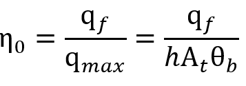
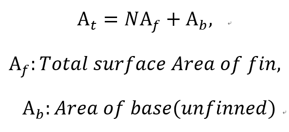
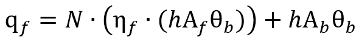
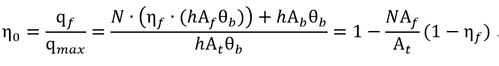
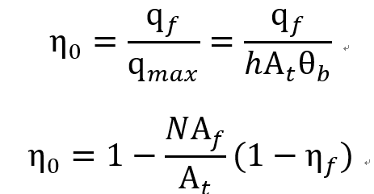
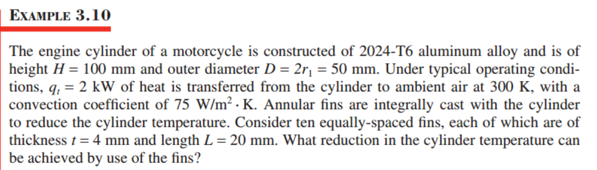
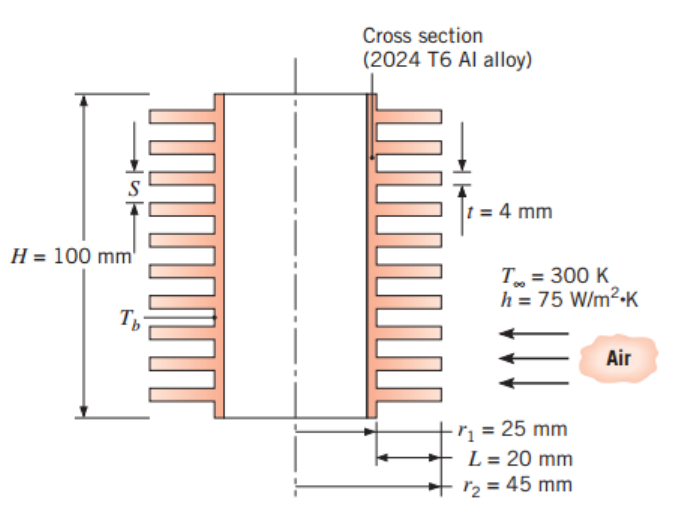
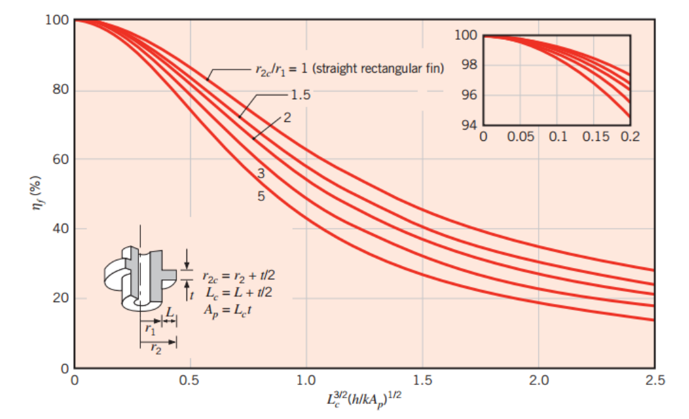
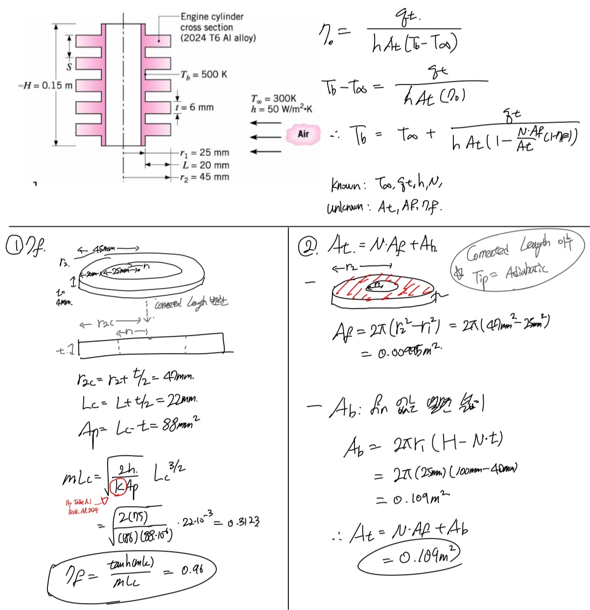
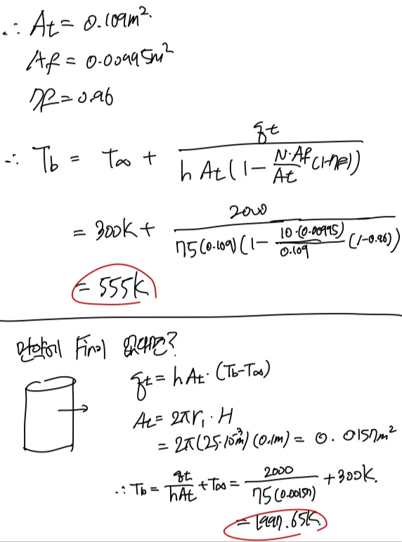

---
{
"layout": "note",
"title": "[Heat and Mass transfer] Ch 3 ,1-Dimensional, Steady-State Conduction - Overall surface efficiency",
"journal": true,
"section": "Study",
"topic": "Heat transfer",
"excerpt": "지난시간에 Fin을 넣을까 말까??? 엔지니어들이 만든 Fin 효율의 기준점. Fin effectiviness Fin efficiency 두가지를 살펴보았습니다. 이번에 마지막으로 1.Overall Surface Efficiency ",
"classes": "wide",
"permalink": "/blog/mechanical-engineering/heat-transfer/heat-and-mass-transfer-ch-3-1-dimensional-steady-state-conduction-overall-surface-efficiency/",
"study_area": "Mechanical",
"date": "2024-03-28",
"source_url": "https://jeffdissel.tistory.com/31",
"header": {
"teaser": "/blog/mechanical-engineering/heat-transfer/heat-and-mass-transfer-ch-3-1-dimensional-steady-state-conduction-overall-surface-efficiency/images/img-001.png"
}
}
---
{% raw %}지난시간에 Fin을 넣을까 말까???
엔지니어들이 만든 Fin 효율의 기준점.
Fin effectiviness
Fin efficiency
두가지를 살펴보았습니다.
이번에 마지막으로
1.Overall Surface Efficiency
2. 예제문제
짧고 굵게 하고 끝내겠습니다^^
Overall Surface Efficiency
이전까지는 fin한개를 기준을 살펴보았습니다.
하지만 실제로 heat exchanger, air conditioner 살펴보면
Fin이 한개가 아니겠죠?
따라서,
Overall surface efficiency는 array of fins and the base surface 효율을 나타냅니다.
Fin Efficiency의 정의 지난시간에 언급했었죠?
효율 = fin 설치했을때 전체 열전달/ fin 설치했을때 최대 열전달.
Q.최대 열전달이란?
실제로는 불가능하지만,
Conduction이 거의 일어나지 않았다고 보아(k =∞)
fin표면의 온도 = Base 온도(시작온도)
라고 생각하고 fin에서 convection열전달량

여기서 면적을 햇갈리시면 안됩니다.
fin이 여러개 있고 전체면적이기 때문에,
Total Area = fin겉면적 fin 갯수 + fin없는 base면적

이제 qf를 표현 해보면
qf = N * (1개 fin 열전달량) + (unfinned base 열전달량)
1개 fin 열전달량 = (fin efficiency)(1개 fin q max)
이전 포스터에서 1개 fin q max도 역시
Conduction이 거의 일어나지 않았다고 가정하고
Tb(Base T) = Ts(fin surface T)
따라서,

이제 overall heat efficiency 식에 대입해주면,

최종적으로, 잊지 말아햐 하는 Efficiency 식

문제로 완벽 이해 ㄱㄱㄱ





{% endraw %}